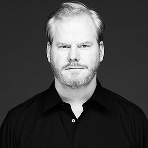

CHARMAINE FARBER
Welcome Speech
Friday {4:10pm - 6:00 pm}
Cal Poly PAC
Friday {4:10pm - 6:00 pm}
Cal Poly PAC
Charmaine Farber is an assistant professor in Graphic Communication at Cal Poly San Luis Obispo, and teaches user experience design and web/mobile app design. She earned an M.F.A., with honors, in Design from the University of Iowa. She also attended the Savannah College of Art and Design with an Artistic Scholarship and earned her M.A. in Interactive Media Design and Game Development. Her B.F.A. is in Design from the University of Iowa. Farber served as "Education Director – Student Initiatives", and "Membership Director" on the Connecticut Executive Board of Directors of AIGA and also served on the Pittsburgh board of Directors of AIGA.

JIM GAFFIGAN
Stand-Up Comedy
Friday {7:10pm - 9:00 pm}
SLO Brew
Friday {7:10pm - 9:00 pm}
SLO Brew
James Christopher "Jim" Gaffigan was born on July 7, 1966. He is an American stand-up comedian, actor, writer, and producer. His humor largely revolves around fatherhood, observations, laziness, and food. He is also regarded as a "clean" comic, using little profanity in his routines. He has had several successful comedy specials, including Mr. Universe and Jim Gaffigan: Obsessed, both of which received Grammy nominations. His memoir, Dad Is Fat (2013) and his most recent book, Food: A Love Story (2014), are both published by Crown Publishers. He co-created and starred in a TV Land television series based on his life called The Jim Gaffigan Show.